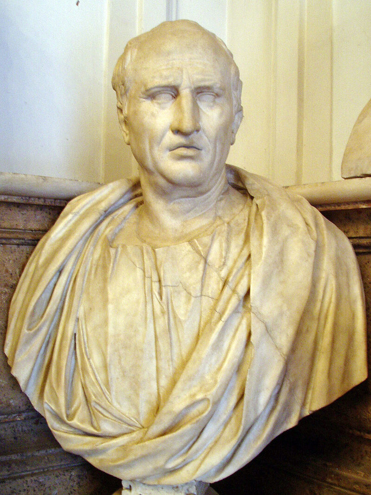
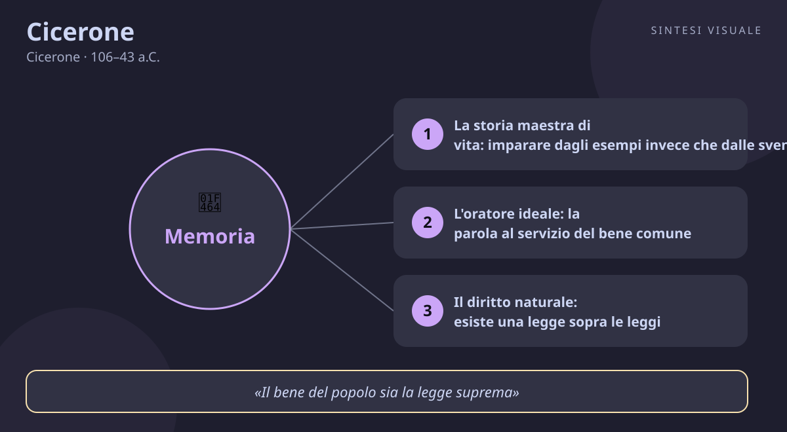

Cicerone
Cicerone · 106–43 a.C.
«La storia, maestra di vita»
- Storia
- Eloquenza
- Diritto naturale
- Repubblica
💬La massima
«La storia, testimone dei tempi, luce della verità, vita della memoria, maestra della vita, messaggera dell'antichità.»
— Cicerone, De oratore, II, 36 (opera del 55 a.C.; la formula breve Historia magistra vitae, «la storia maestra di vita», ne è la sintesi diventata proverbiale)
Nel dialogo sull'arte oratoria è il personaggio di Marco Antonio (l'oratore, nonno del triumviro) a pronunciare l'elogio della storia: senza di essa, dice, l'oratore non ha esempi da citare, il cittadino non ha modelli da imitare, la città non ha memoria di sé. La storia è testis temporum — registra ciò che davvero accadde; lux veritatis — fa luce contro dicerie e propagande; vita memoriae — tiene in vita ciò che altrimenti morirebbe con i testimoni; magistra vitae — insegna, perché mostra le conseguenze delle scelte umane; nuntia vetustatis — ci consegna la voce degli antichi.
Il punto è pratico, non nostalgico: chi studia il passato compra esperienza a prezzo scontato. Non devi fallire tu stesso ogni errore — puoi guardare come fallirono gli altri. Per Cicerone, avvocato e uomo di governo, questa è la differenza tra il politico serio e l'improvvisatore: il primo arriva in aula con duemila anni di casi alle spalle, il secondo con le sole sue impressioni. E vale per tutti: ogni decisione — un mutuo, un voto, un'assunzione — migliora se prima chiedi «quando è già successo qualcosa di simile, e come è finita?».
👤Biografia
Marco Tullio Cicerone nasce ad Arpino, nel Lazio interno, il 3 gennaio del 106 a.C., in una ricca famiglia dell'ordine equestre: nessun antenato console, nessun nome da spendere. È uno homo novus, e lo resterà orgogliosamente per sempre. Studia a Roma e poi in Grecia, a Atene e a Rodi, retorica e filosofia; la sua giornata tipo è leggendaria: si alza all'alba, riceve clienti, perora in tribunale, scrive fino a notte fonda.
La sua ascesa è fulminea: questore in Sicilia nel 75, dove si fa amare per l'onestà, pretore, e infine console nel 63 a soli 43 anni — l'età minima consentita. Da console sventa la congiura di Catilina con quattro fulminanti orazioni in Senato e viene acclamato padre della patria. Ma la gloria dura poco: nel 58 il tribuno Clodio lo manda in esilio con una legge costruita apposta contro di lui; Cicerone fugge a Tessalonica, umiliato e depresso, e torna solo nel 57 tra le feste del popolo.
Seguono anni difficili: la Repubblica crolla sotto Cesare, Pompeo e Crasso. Proconsole in Cilicia nel 51, si schiera con Pompeo nella guerra civile e viene graziato da Cesare dopo Farsalo; ritiratosi dalla politica attiva, scrive in pochi anni quasi tutta la sua filosofia. Dopo le Idi di marzo del 44 attacca Antonio con le Filippiche: è la sua condanna. Proscritto dal secondo triumvirato, viene raggiunto presso Formia il 7 dicembre del 43 e ucciso dai sicari di Antonio — la tradizione dice che tese il collo alla lettiga senza fuggire. Testa e mani, le mani che avevano scritto contro la tirannide, furono inchiodate ai Rostri nel Foro.
Di carattere era un lavoratore instancabile e un vanitoso incorreggibile: le lettere all'amico Attico lo mostrano ansioso, permaloso, bisognoso di approvazione — e proprio per questo umanissimo. Amava la Repubblica più di sé stesso, temeva la solitudine, piangeva per la figlia Tullia morta giovane, e non seppe mai tacere quando vedeva la libertà in pericolo.
📌Sintesi del pensiero
Cicerone non inventa un sistema, ma compie un'operazione geniale: traduce la filosofia greca in latino e la mette al servizio della vita pubblica romana. Scettico dell'Accademia, rifiuta i dogmi assoluti e sceglie di volta in volta l'opinione più probabile; dagli stoici prende l'idea di una legge naturale universale e del dovere; da Platone e Polibio l'ideale della costituzione mista. Il suo centro è uno solo: l'eloquenza guidata dalla saggezza deve governare la città, e il cittadino colto deve servire la Repubblica.
🏛️I temi fondamentali
- La storia maestra di vita: imparare dagli esempi invece che dalle sventure. Per Cicerone la storia non è erudizione da scaffale ma serbatoio di exempla, casi concreti da citare in tribunale e in Senato: come finì chi accumulò troppo potere? Cosa successe quando il popolo seguì un demagogo? Esempio concreto: un sindaco che prima di privatizzare l'acqua studia come andò in altre città che lo fecero — tariffe, disservizi, ripensamenti — sta applicando Cicerone alla lettera: decide con duemila anni di prove invece che con uno slogan.
- L'oratore ideale: la parola al servizio del bene comune. Il De oratore disegna il perfetto uomo pubblico: non il tecnico della battuta, ma il cittadino che conosce il diritto, la storia e la filosofia e usa l'eloquenza per convincere verso il giusto. Parlare bene senza sapere è ciarlataneria; sapere senza saper parlare è impotenza. Esempio concreto: il medico che spiega una diagnosi difficile con parole chiare e oneste, senza gergo e senza allarmismi, è l'oratore ideale in corsia — unisce competenza e comunicazione, e il paziente decide meglio.
- Il diritto naturale: esiste una legge sopra le leggi. Nel De re publica e nel De legibus Cicerone sostiene che sopra le leggi scritte dagli uomini c'è una legge non scritta, dettata dalla ragione e comune a tutti i popoli: è ingiusta la legge che la contraddice, anche se votata regolarmente. Esempio concreto: quando un whistleblower denuncia un abuso coperto da regolamenti interni, o un giudice disapplica una norma palesemente iniqua, sta invocando — consapevolmente o no — la legge superiore di cui parlava Cicerone.
- La costituzione mista: nessuno deve comandare da solo. Studiando Polibio, Cicerone spiega che Roma fu grande perché mescolava monarchia (i consoli), aristocrazia (il Senato) e democrazia (i comizi e i tribuni), così che ogni potere frenava gli altri. Quando un elemento prevale — un generale con l'esercito personale, una folla sobillata — la Repubblica muore. Esempio concreto: in un'azienda sana l'amministratore propone, il collegio sindacale controlla e i dipendenti possono segnalare illeciti: togli uno dei tre contrappesi e gli scandali diventano questione di tempo, esattamente come nella Roma che Cicerone vide crollare.
- Il dovere e l'umanità comune: ciò che è utile deve essere onesto. Nel De officiis, scritto per il figlio Marco, fonde l'etica stoica con il buon senso romano: il vero utile coincide sempre con l'onesto, e ogni uomo — anche lo schiavo, anche lo straniero — partecipa della stessa ragione universale: è l'idea di humanitas. Esempio concreto: l'imprenditore che rinuncia a un fornitore più economico perché usa lavoro minorile perde un margine oggi e guadagna reputazione, clienti fedeli e sonni tranquilli domani: utile e onesto coincidono, come nel manuale che Cicerone lasciò al figlio.
📚Le opere principali
- De oratore (55 a.C.). Dialogo in tre libri sull'oratore perfetto, ambientato nel 91 a.C. tra i grandi avvocati dell'epoca. Tesi centrale: l'eloquenza senza cultura è vuota, e la cultura senza eloquenza è muta — il cittadino ideale le unisce. Conta perché fonda duemila anni di insegnamento della retorica e contiene la massima di oggi.
- De re publica (54–51 a.C.). Dialogo in sei libri sul miglior ordinamento dello Stato, con il celebre Sogno di Scipione finale sull'immortalità dell'anima e il destino cosmico dei giusti governanti. Tesi centrale: lo Stato è res populi, cosa del popolo, e regge solo con giustizia e costituzione mista. Conta perché trasmette ai posteri — da Agostino a Montesquieu — l'idea romana di Repubblica.
- De officiis (44 a.C., Sui doveri). Tre libri indirizzati al figlio Marco, allora studente ad Atene: manuale pratico di etica pubblica su onesto, utile e loro conflitto apparente. Tesi centrale: niente è veramente utile se non è onesto. Conta perché fu per secoli il libro di formazione delle classi dirigenti europee e il testo pagano più stampato dopo l'invenzione della stampa.
- Le orazioni: Catilinarie (63 a.C.) e Filippiche (44–43 a.C.). Le prime smascherano in Senato la congiura di Catilina; le seconde, quattordici discorsi, denunciano Marco Antonio dopo la morte di Cesare. Tesi centrale: la parola pubblica può salvare o condannare una Repubblica. Contano perché sono il modello eterno dell'arringa civile — e le Filippiche costarono all'autore la vita.
💬Massime celebri
«Fino a quando, Catilina, abuserai della nostra pazienza?» (Quousque tandem abutere, Catilina, patientia nostra? — Prima Catilinaria, I, 1). Conta perché è l'attacco più famoso della storia dell'oratoria: mostra come una sola domanda ben piazzata possa inchiodare un colpevole davanti a tutti.
«O tempi, o costumi!» (O tempora, o mores! — Prima Catilinaria, I, 1, 2). Conta perché è diventato il lamento universale di chi vede i valori della propria epoca decadere — e dimostra che ogni generazione crede di vivere la peggiore.
«Il bene del popolo sia la legge suprema» (Salus populi suprema lex esto — De legibus, III, 3, 8). Conta perché mette il limite invalicabile a ogni potere: nessuna ragione di Stato, nessuna emergenza giustifica il danno alla comunità.
⌛Contesto storico
Cicerone vive nella Roma della tarda Repubblica, il cinquantennio più turbolento della storia romana. Nasce nel 106 a.C., mentre Mario riforma l'esercito aprendo le legioni ai nullatenenti: da quel momento i soldati sono fedeli al generale che li paga, non allo Stato. Da ragazzo vede la guerra sociale degli alleati italici, poi l'orrore della guerra civile tra Mario e Silla, con le liste di proscrizione e migliaia di teste mozzate esposte nel Foro — lo stesso Foro dove finirà la sua.
È un mondo di giganti e di violenza: la rivolta di Spartaco (73–71) spaventa l'Italia, Pompeo ripulisce il Mediterraneo dai pirati, Cesare conquista la Gallia, il triumvirato con Crasso spartisce la Repubblica come un bottino. Nel 63, l'anno del suo consolato, Roma è una metropoli di quasi un milione di abitanti: senatori ricchissimi con ville e latifondi lavorati da schiavi, cavalieri arricchiti con gli appalti, una plebe urbana mantenuta con grano gratis e giochi, e una macchina politica oliata da clientele, tangenti elettorali e bande armate. La cultura è profondamente ellenizzata: i giovani dell'élite studiano ad Atene e a Rodi, e il greco è la lingua della filosofia.
Dopo il 49 la Repubblica muore nella guerra civile tra Cesare e Pompeo; il cesaricidio del 44 illude i repubblicani ma apre la strada al secondo triumvirato e a nuove proscrizioni. I movimenti che formano Cicerone sono lo scetticismo dell'Accademia (Filone di Larissa), la Stoa di mezzo di Panezio e Posidonio, e i modelli greci Isocrate e Polibio; quelli che lui trasmette sono enormi: la retorica romana alle scuole medievali, l'idea di Repubblica a Montesquieu e ai padri fondatori americani, il diritto naturale alla modernità giuridica.
🌊L'eredità
Sant'Agostino racconta che a diciannove anni fu la lettura dell'Ortensio di Cicerone ad accenderlo alla filosofia — senza Cicerone, forse, niente Confessioni. Nel Medioevo i monaci ricopiano le sue orazioni come modello di latino e i giuristi bolognesi vi trovano le radici del diritto naturale; Petrarca, ritrovando nel 1345 le lettere ad Attico a Verona, piange di commozione e inventa con lui l'Umanesimo. Montesquieu cita il De legibus per la separazione dei poteri, e i fondatori degli Stati Uniti — John Adams su tutti — imparano a memoria le Catilinarie per riconoscere i tiranni moderni. Persino i critici lo celebrano suo malgrado: Nietzsche lo deride come chiacchierone, ma scrive un latino che deve tutto a lui. Ogni aula di tribunale, ogni parlamento, ogni manuale di public speaking porta ancora la sua impronta: la civiltà occidentale discute, accusa e difende con le mosse che lui codificò.
🌍Esempi di oggi
- Il voto e le promesse del demagogo. Un candidato promette di risolvere tutto in cento giorni bastonando un capro espiatorio: chi ha letto la storia ricorda Catilina e i tribuni demagoghi, controlla i programmi invece degli slogan e vota con la memoria accesa. La massima in azione: il passato smaschera il copione prima che vada in scena.
- La riunione in cui «si è sempre fatto così». In ufficio qualcuno propone di rifare un progetto fallito due anni fa senza chiedersi perché fallì: il collega ciceroniano riapre il vecchio dossier, mostra numeri ed errori, ed evita di pagare due volte lo stesso sbaglio. La storia aziendale, come quella romana, è maestra solo per chi la consulta.
- I social e le bufale. Una notizia incredibile rimbalza su tutti i gruppi: prima di condividerla, verifichi fonte, data e contesto — applichi historia lux veritatis, la storia come luce della verità. Chi controlla il passato di una notizia (chi l'ha detta, quando, con quali prove) non diventa complice della menzogna.
📄
# Cicerone — «La storia, maestra di vita»
Buongiorno! Oggi incontriamo l'uomo che insegnò a Roma a parlare e a pensare: un avvocato senza antenati illustri, nato in un paesino del Lazio, che con la sola forza della parola diventò console, smascherò una congiura contro la Repubblica e pagò con la vita il suo amore per la libertà. Il busto qui sopra — il marmo dei Musei Capitolini, alto 93 centimetri, copia antica di un originale del suo tempo — lo mostra con il volto scavato, il collo taurino e quello sguardo da oratore che ha già capito l'obiezione dell'avversario.
🧠Quiz
1 La frase completa da cui viene la massima si trova:
2 Cicerone era uno homo novus: cosa significa?
3 Secondo il De legibus, sopra le leggi scritte c'è:
4 Perché Cicerone fu ucciso nel 43 a.C.?
5 Chi racconta di essere stato convertito alla filosofia dalla lettura dell'Ortensio di Cicerone?
Rispondi in chat con es. 1B 2A 3C 4D 5A (usa «-» per le risposte che salti): correggo e ti do il punteggio con un ripasso mirato!
✅Soluzioni — tocca per vedere
1C – 2A – 3B – 4D – 5D.
🔁Ripasso
- De oratore e la massima: dialogo del 55 a.C. sull'oratore ideale; la storia serve all'uomo pubblico come archivio di esempi. Se hai sbagliato la 1, rileggi la sezione «La massima».
- Homo novus: primo della famiglia al consolato. Se hai sbagliato la 2, rileggi l'inizio della «Biografia breve».
- Diritto naturale: legge universale della ragione sopra le leggi scritte. Se hai sbagliato la 3, rileggi il terzo dei «Temi fondamentali».
- Proscrizione del 43: le Filippiche contro Antonio costarono la vita a Cicerone; testa e mani ai Rostri. Se hai sbagliato la 4, rileggi la fine della «Biografia breve».
- Agostino e l'Ortensio: alle origini delle Confessioni c'è Cicerone. Se hai sbagliato la 5, rileggi «Eredità».
🖼️In un colpo d’occhio

Tocca l’immagine per ingrandirla.